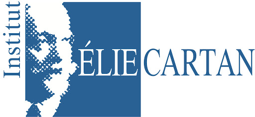
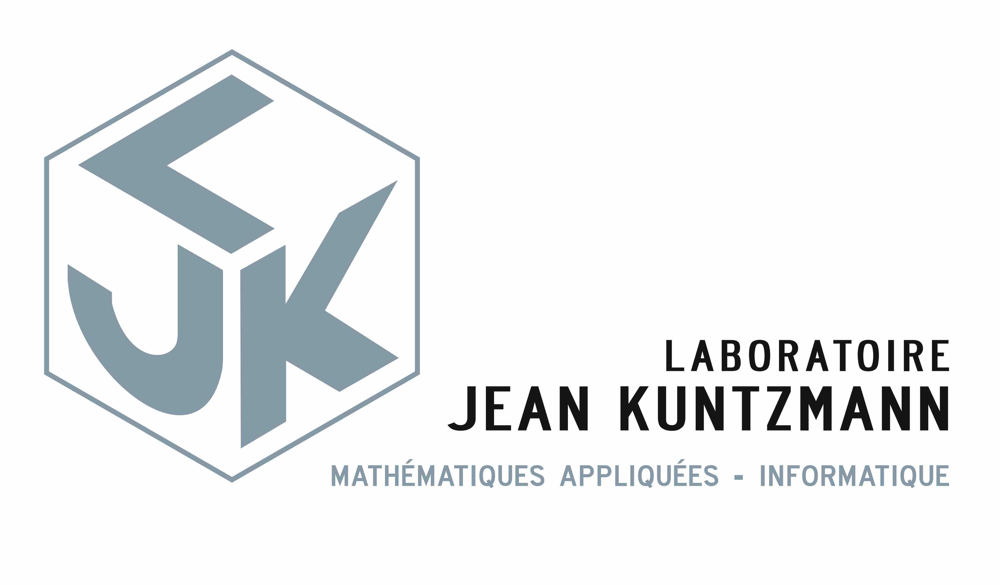

Metz-TheoLab
SHERBET Project
Stemmatology for the HEbRew BiblE Transmission
Aim and Objectives
The SHERBET project aims at improving the understanding of the genealogical lineage of the Hebrew Bible through computational stemmatology methods, by applying the latest advances in applied mathematics and natural language processing to reconstruct the stemmata of the Hebrew Bible manuscripts and more specifically of its oldest witnesses, the Dead Sea scrolls (DSS). To reach this goal, we will
- objectively validate the relevance of using stemmatology algorithms to reconstruct biblical tradition lineage by generating synthetic datasets representative of the DSS acting as a ground truth for the algorithms;
- provide a comprehensive benchmarking survey of algorithms using this dataset;
- design our own probability-based model specific to the constraints of textual transmission and the complexity of human language by modeling scribal behavior, and compare it to the state of the art;
- apply the best performing algorithm to the real data and draw conclusions regarding scribal behaviors and the textual fluidity of biblical texts transmission.
Main Work Packages
- Benchmarking and calibrating stemmatology algorithms to the Qumran and Cairo Genizah textual traditions;
- Development of novel computational stemmatology algorithms
- Using a precise probability transition model;
- Leveraging recent advances in Natural Language Processing;
- Outperforming current algorithms;
- Applications of these algorithms to build the relational lineage of several traditions, starting with Hebrew manuscripts of Ben Sira.
Consortium
This multidisciplinary project will be carried by different teams, representing each involved field.
Biblical Studies & Philology
- Pr. Frédérique Michèle Rey (Ecritures laboratory, University of Lorraine)
- Pr. Jacques Elfassi (Ecritures laboratory, University of Lorraine)
- Pr. Eric D. Reymond (Yale University)
- Pr. Willem van Peursen (Vrije Universiteit Amsterdam)
Applied Mathematics
- Pr. Jacques Istas ( Jean Kunzmann laboratory, University Grenoble Alpes)
- Pr. Marianne Clausel (Institut Élie Cartan de Lorraine,University of Lorraine)
- Dr. Etienne Bernard (CERMICS, Ecole Nationale des Ponts et Chaussées)
Linguistics and Natural Language Processing
- Pr. Maxime Amblard (LORIA laboratory, University of Lorraine)
- Pr. Gaël Guibon (LORIA laboratory, University of Lorraine)
- Iglika Nikolova Stoupak (LORIA laboratory, University of Lorraine)
Software Development and Algorithms Implementation
- Dr. Sophie Robert (Ecritures laboratory, University of Lorraine)
- Pr. Laure Gonnord (LCIS laboratory, Institut polytechnique de Grenoble)
Follow our results
Softwares
Stemmabench
StemmaBench is a Python package for quick generation of artificial, synthetic scribal traditions. From an original text, it generates a series of witnesses based on a set of variable aiming at describing the different scribal behaviors.
https://github.com/metz-theolab/stemmabench
Variant analysis
Modelization of Scribal behaviors
Publications
- Frédérique Michèle Rey and Eric D. Reymond, A Critical Edition of the Hebrew Manuscripts of Ben Sira: With Translations and Philological Notes, Supplements to the Journal for the Study of Judaism 217 (Leiden: Brill, 2024), https://doi.org/10.1163/9789004700802, https://brill.com/view/title/68844.
Funding and Institutional Partners

